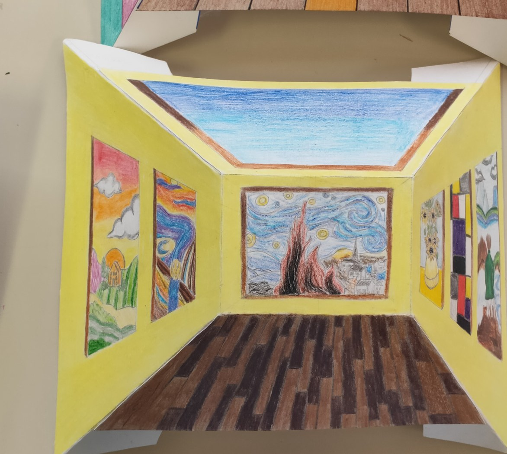

Foto da aggiungere
Classi terze • aprile–maggio 2026
Prospettiva inversa: lo spazio che inganna
Dopo aver ripreso i principi della prospettiva centrale a un punto di fuga, gli studenti hanno sperimentato la prospettiva inversa tridimensionale ispirata alle opere dell’artista britannico Patrick Hughes. Il disegno iniziale rappresenta uno spazio interno costruito secondo le regole prospettiche; successivamente alcune parti del foglio vengono eliminate e la superficie viene piegata, trasformando l’immagine in una struttura tridimensionale. Si crea così un contrasto sorprendente tra la profondità suggerita dal disegno e la forma reale, che sporge verso l’osservatore. Ogni studente ha personalizzato liberamente l’ambiente, scegliendone soggetto, colori e dettagli.

Presentazione dell’attività
Dalla prospettiva centrale all’illusione tridimensionale
La presentazione introduce Patrick Hughes, chiarisce il principio della prospettiva inversa e accompagna gli studenti nelle fasi di disegno, taglio e piegatura della struttura.
Apri la presentazione su Canva ↗Elaborati degli studenti
I lavori realizzati
1 fotografia disponibile • spazio predisposto per 9 lavori

Foto da aggiungere
Foto da aggiungere
Foto da aggiungere
Foto da aggiungere
Foto da aggiungere
Foto da aggiungere
Foto da aggiungere